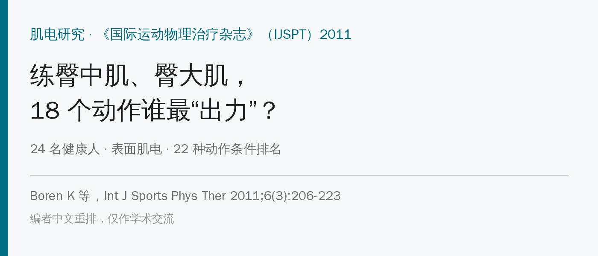
🔖原文信息（编者中文重排）
📚 文献信息
▪ Boren K, Conrey C, Le Coguic J, Paprocki L, Voight M, Robinson TK. Electromyographic analysis of gluteus medius and gluteus maximus during rehabilitation exercises. Int J Sports Phys Ther. 2011;6(3):206-223.
▪ 作者来自美国贝尔蒙特大学（田纳西州纳什维尔）
▪ 横断面肌电研究
臀中肌和臀大肌负责在单腿支撑时稳住骨盆、防止髋内收内旋。它们无力，跟胫骨应力骨折、腰痛、髂胫束摩擦综合征、前交叉韧带损伤、髌股痛都有关系。
之前 Distefano、Bolgla、Ayotte 各自给一批动作排过肌电名次，但彼此没比过。这篇把三项研究的前几名，加上其他常用动作，放在同一批人身上一起测。作者把 ≥70% 最大自主等长收缩（%MVIC）当作“够得上力量训练”的门槛。
先说结论：侧桥外展、单腿蹲、平板支撑 + 伸髋三类动作，两块肌肉都能到 70% 以上；蚌式 4 专练臀中肌（77%），站立臀肌夹紧专练臀大肌（81%）。
• 对象：24 名健康成人（≥21 岁），排除运动时疼痛、近 2 年下肢手术或前交叉韧带损伤
• 表面肌电贴在优势腿（踢球那条腿）的臀中肌和臀大肌
• 最大自主等长收缩：按徒手肌力测试标准体位，股骨远端用绑带固定，每块肌肉 3 次、每次 5 秒
• 每个动作先练 3 次、再正式做 5 次，节拍器 60 次/分钟统一速度，赤脚，随机顺序，动作间休息 2 分钟
• 取每次重复的峰值（前后 50 毫秒平均），换算成 %MVIC 后排名
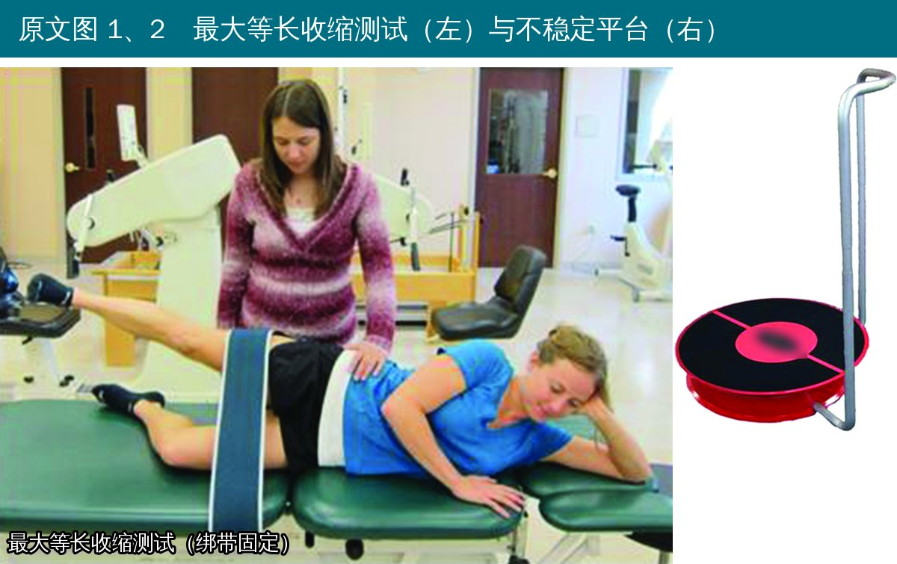
🔖原文图 1、2
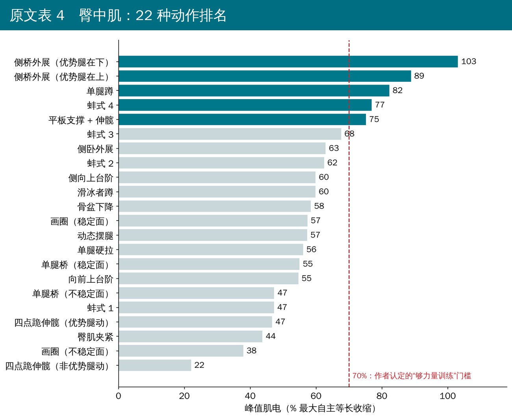
🔖臀中肌排名
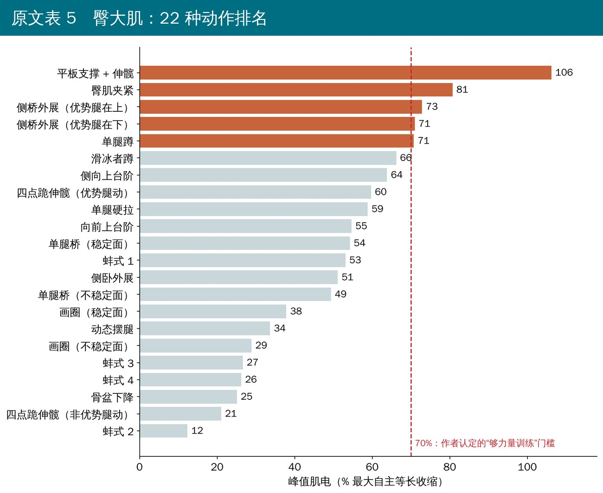
🔖臀大肌排名
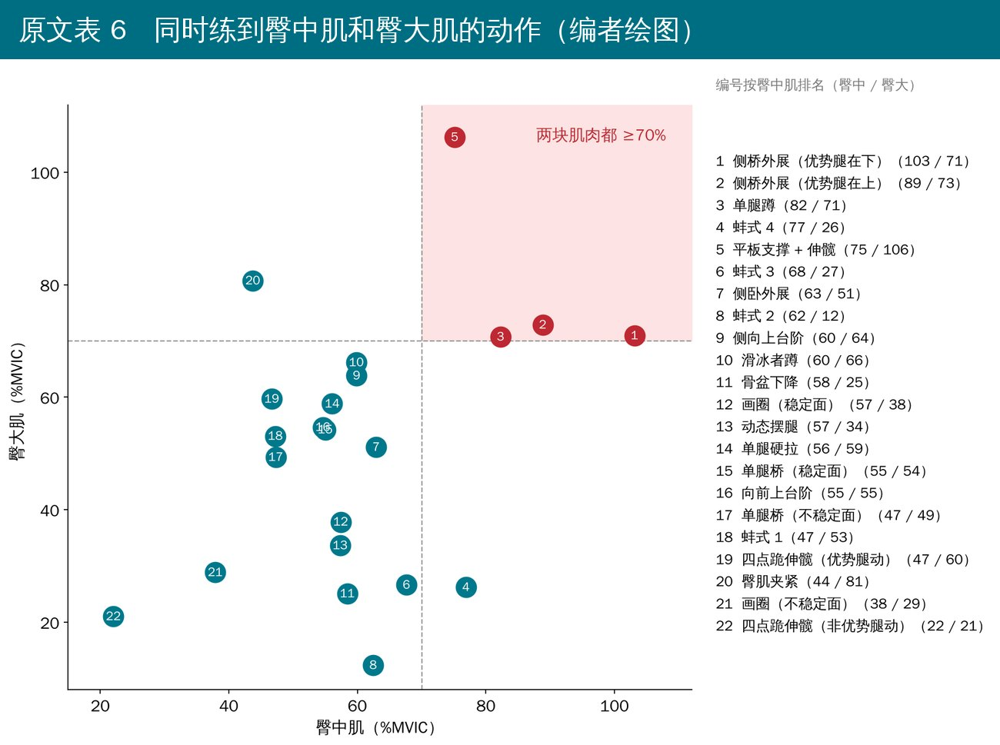
🔖两块肌肉同时看
• 臀中肌 ≥70%：侧桥外展-优势腿在下 103%、侧桥外展-优势腿在上 89%、单腿蹲 82%、蚌式 4 77%、平板支撑伸髋 75%
• 臀大肌 ≥70%：平板支撑伸髋 106%、臀肌夹紧 81%、两种侧桥外展 73% 和 71%、单腿蹲 71%
• 两块都 ≥70%：平板支撑伸髋、两种侧桥外展、单腿蹲
• 意外的是：单腿桥只排臀大肌第 11（稳定面）和第 14（不稳定面），受试者常说腘绳肌抽筋，作者怀疑腘绳肌代偿
• 蚌式 2～4 臀中肌很高，但臀大肌只有 12%～27%，是“定点”练臀中肌的好选择
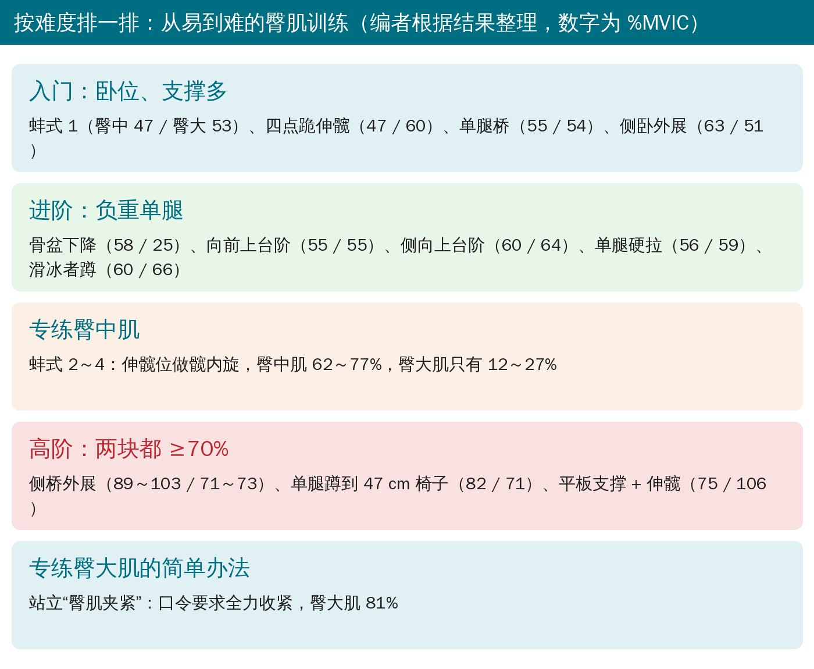
🔖按难度分层
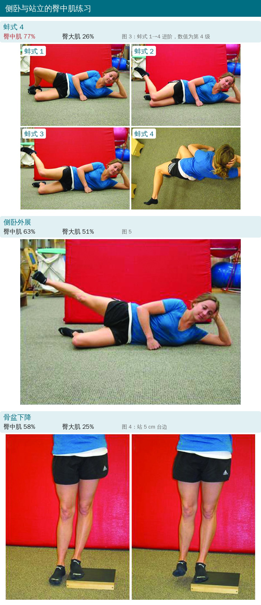
🔖蚌式、侧卧外展、骨盆下降
• 蚌式 1：侧卧，髋屈约 45°、屈膝、双脚并拢；外旋上方髋把两膝打开（1 拍），1 拍回来
• 蚌式 2：同样姿势，两膝并拢，内旋上方髋把上方脚抬离下方脚
• 蚌式 3：上方腿抬到与地面平行，保持膝的高度，内旋髋把脚往天花板方向抬
• 蚌式 4：同蚌式 3，但髋完全伸直；回到起始位时膝、踝在一条线上
• 侧卧外展：下方腿屈髋屈膝支撑，上方腿外展约 30°，保持髋中立或微伸、膝伸直、脚尖朝前；2 拍上、2 拍下（防止阔筋膜张肌代偿）
• 骨盆下降：优势腿站在 5 cm 台阶边缘，另一侧脚跟下落轻触地面（不承重），再把骨盆抬回，髋膝始终伸直
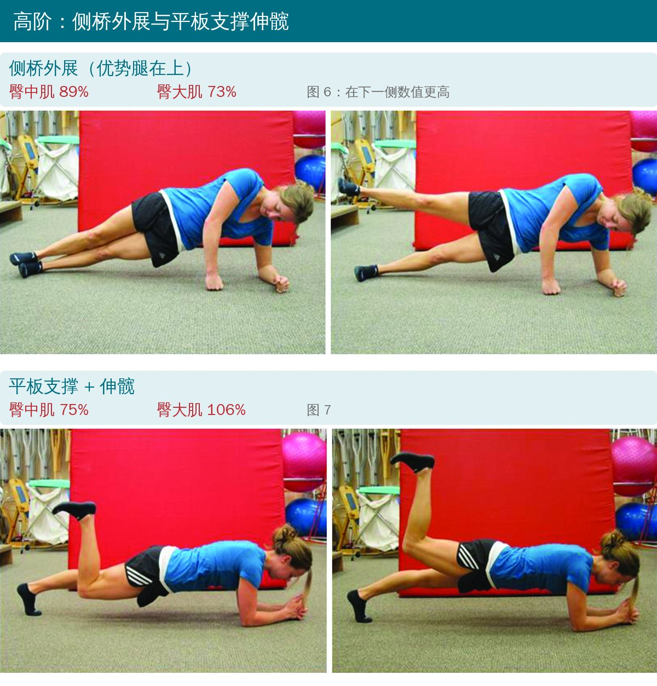
🔖侧桥外展、平板支撑伸髋
• 侧桥外展：肘和脚支撑，肩、髋、膝、踝成一条线，把髋抬起成侧桥；保持侧桥，上方腿外展 1 拍、放下 1 拍。支撑在下的那条腿，臀中肌 103%
• 平板支撑 + 伸髋：前臂撑地的平板，躯干、髋、膝中立；优势腿离地、屈膝，把脚跟向天花板方向伸髋越过中立位，1 拍上、1 拍回
• 这两个动作需要很强的核心稳定，不适合力量弱的早期患者
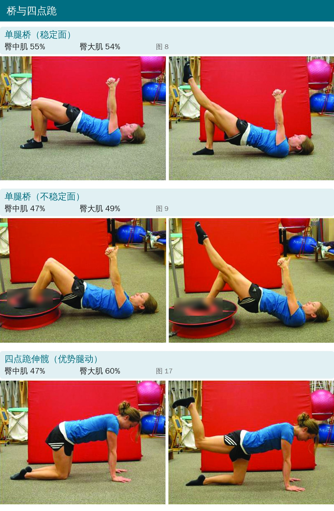
🔖单腿桥、四点跪伸髋
• 单腿桥（稳定面）：屈膝仰卧，先双腿桥抬到躯干、髋、膝中立；再伸直非优势腿的膝（两侧大腿保持平行）1 拍，收回 1 拍，落下 1 拍
• 单腿桥（不稳定面）：同上，优势脚踩在不稳定平台中央，保持平台居中
• 四点跪伸髋：四点跪，膝保持屈 90°，伸髋把脚往天花板抬到髋中立位，2 拍上、2 拍下；左右都测——动的腿臀大肌 60%，撑地的腿只有约 21%
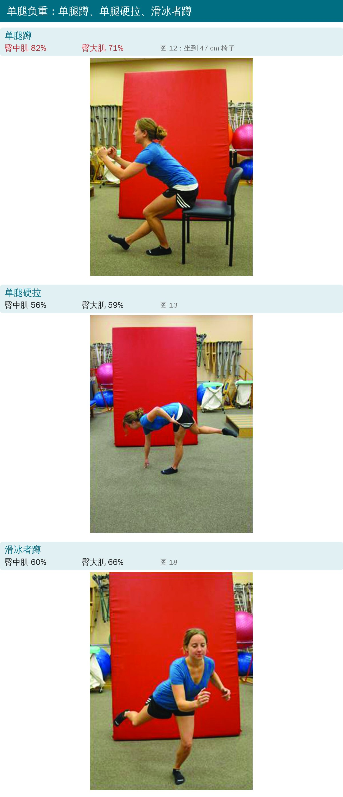
🔖单腿蹲、单腿硬拉、滑冰者蹲
• 单腿蹲：优势腿站立，慢慢下蹲到臀部碰到 47 cm 高的椅子，2 拍下、2 拍上
• 单腿硬拉：单腿站，背挺直屈髋，用对侧手碰地，2 拍下、2 拍上；腘绳肌紧可微屈膝
• 滑冰者蹲：单腿站，另一腿伸髋屈膝在后，舒适深度下蹲同时躯干转动，2 拍下、2 拍上；后脚尖可在两次之间点地
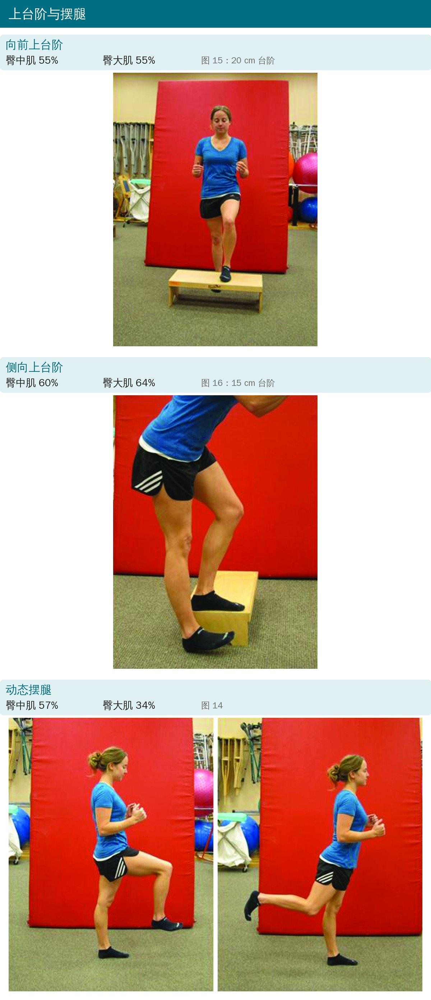
🔖上台阶、摆腿
• 向前上台阶：优势腿先迈上 20 cm 台阶，另一腿跟上，再依次下来，每步 1 拍
• 侧向上台阶：优势腿站在 15 cm 台阶边，慢慢下蹲让另一侧脚跟往地面落，再回到起始位
• 动态摆腿：单腿站，另一腿屈膝前后摆（屈髋、伸髋各 1 拍），躯干保持直立
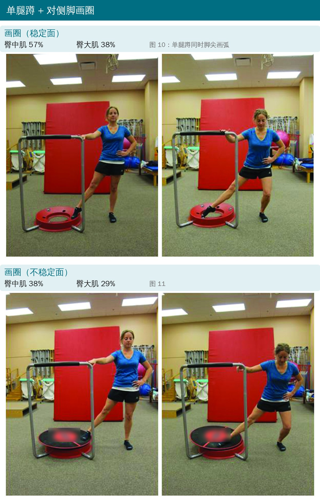
🔖画圈
• 站在平台旁，优势腿单腿下蹲，同时非优势脚脚尖沿平台外缘画弧（3 拍），再画回站起（3 拍）
• 允许单手两指扶架子保持平衡；不稳定面版本把脚放在平台上推着画
• 不稳定面反而更低：臀中肌从 57% 降到 38%
双脚与肩同宽站立，全力夹紧臀部 2 拍、放松 2 拍。臀大肌 81%，排第 2。注意这是唯一一个明确口令“全力收缩臀肌”的动作，作者也提醒高分可能和口令有关。
• 健康年轻人、表面肌电、只看峰值：峰值高不等于整个动作都在高强度工作，也不等于长期训练一定长得更多
• “70%MVIC 足够增肌”是作者根据别的研究推出来的，并不是本研究验证的
• 两个动作超过 100%，说明最大等长收缩测试可能没测到真正最大值，或者核心协同收缩抬高了数值
• 动作标准靠肉眼判断，没有用动作捕捉；单腿蹲按固定椅子高度（47 cm），个子高的人更难
• 只在 24 人里测了一次，没有报告标准差和统计检验，排名之间很多只差几个百分点
原文里对不上的地方：
• 题目和摘要说 18 个动作，表格里是 22 种条件（侧桥、单腿桥、画圈、四点跪各分两种，蚌式分 4 级）
• 方法写“取中间 3 次重复”，讨论又写“第 5、6、7 次重复”，而正式记录只有 5 次
• 作者名 Bolgla 在正文多处拼成“Bolga”；摘要“front plank”拼成“font plank”
• 排除标准“年龄 <21 岁”与“健康受试者可运动 1 小时”并列，但没有报告受试者的年龄、性别等基本资料
• 先定目标肌肉，再从低到高排动作：早期选蚌式 1、四点跪、单腿桥、侧卧外展；能负重后上台阶、单腿硬拉、滑冰者蹲；最后上侧桥外展、单腿蹲、平板伸髋
• 只想练臀中肌：蚌式 3、4（伸髋位内旋）比蚌式 1 更“干净”，臀大肌参与很少
• 只想练臀大肌：试试站立全力夹臀，或平板支撑伸髋
• 侧卧外展注意脚尖朝前、髋略后伸，避免阔筋膜张肌代偿
• 单腿桥如果腘绳肌抽筋，说明可能在代偿，要调整姿势或换动作
• 不稳定面不一定更好：画圈和单腿桥放到不稳定面后，臀肌数值反而下降
原文表 4、5 22 种动作的 %MVIC 与排名
| 动作 | 臀中肌 n | 臀中肌 %MVIC | 排名 | 臀大肌 n | 臀大肌 %MVIC | 排名 |
|---|---|---|---|---|---|---|
| 侧桥外展（优势腿在下） | 21 | 103.11 | 1 | 21 | 70.96 | 4 |
| 侧桥外展（优势腿在上） | 22 | 88.82 | 2 | 22 | 72.87 | 3 |
| 单腿蹲 | 22 | 82.26 | 3 | 22 | 70.74 | 5 |
| 蚌式 4 | 23 | 76.88 | 4 | 22 | 26.22 | 19 |
| 平板支撑 + 伸髋 | 23 | 75.13 | 5 | 22 | 106.22 | 1 |
| 蚌式 3 | 22 | 67.63 | 6 | 22 | 26.63 | 18 |
| 侧卧外展 | 23 | 62.91 | 7 | 22 | 51.13 | 13 |
| 蚌式 2 | 22 | 62.45 | 8 | 22 | 12.36 | 22 |
| 侧向上台阶 | 21 | 59.87 | 9 | 20 | 63.83 | 7 |
| 滑冰者蹲 | 22 | 59.84 | 10 | 21 | 66.18 | 6 |
| 骨盆下降 | 23 | 58.43 | 11 | 22 | 25.10 | 20 |
| 画圈（稳定面） | 23 | 57.39 | 12 | 22 | 37.85 | 15 |
| 动态摆腿 | 22 | 57.30 | 13 | 22 | 33.65 | 16 |
| 单腿硬拉 | 22 | 56.08 | 14 | 21 | 58.84 | 9 |
| 单腿桥（稳定面） | 22 | 54.99 | 15 | 21 | 54.24 | 11 |
| 向前上台阶 | 22 | 54.62 | 16 | 22 | 54.67 | 10 |
| 单腿桥（不稳定面） | 20 | 47.29 | 17 | 18 | 49.35 | 14 |
| 蚌式 1 | 22 | 47.23 | 18 | 22 | 53.10 | 12 |
| 四点跪伸髋（优势腿动） | 23 | 46.67 | 19 | 22 | 59.70 | 8 |
| 臀肌夹紧 | 23 | 43.72 | 20 | 22 | 80.72 | 2 |
| 画圈（不稳定面） | 23 | 37.88 | 21 | 22 | 28.87 | 17 |
| 四点跪伸髋（非优势腿动） | 23 | 22.03 | 22 | 22 | 21.04 | 21 |
原文表 7 臀中肌：本研究与既往研究对比（%MVIC）
| 本研究排名 | 动作 | 本研究 | Distefano | Bolgla | Ayotte |
|---|---|---|---|---|---|
| 1 | 侧桥外展（优势腿在下） | 103 | |||
| 2 | 侧桥外展（优势腿在上） | 89 | |||
| 3 | 单腿蹲 | 82 | 64 | 52* | |
| 4 | 蚌式 4 | 77 | |||
| 5 | 平板支撑 + 伸髋 | 75 | |||
| 7 | 侧卧外展 | 63 | 81 | 42 | |
| 9 | 侧向上台阶 | 60 | 38 | ||
| 11 | 骨盆下降 | 58 | 57 | ||
| 14 | 单腿硬拉 | 56 | 58 | ||
| 16 | 向前上台阶 | 55 | 44 | ||
| 18 | 蚌式 1 | 47 | 40 |
原文表 8 臀大肌：本研究与既往研究对比（%MVIC）
| 本研究排名 | 动作 | 本研究 | Distefano | Ayotte |
|---|---|---|---|---|
| 1 | 平板支撑 + 伸髋 | 106 | ||
| 2 | 臀肌夹紧 | 81 | ||
| 3 | 侧桥外展（优势腿在上） | 73 | ||
| 4 | 侧桥外展（优势腿在下） | 71 | ||
| 5 | 单腿蹲 | 71 | 59 | 86* |
| 7 | 侧向上台阶 | 64 | 56 | |
| 9 | 单腿硬拉 | 59 | 59 | |
| 10 | 向前上台阶 | 55 | 74 | |
| 12 | 蚌式 1 | 53 | 34 | |
| 13 | 侧卧外展 | 51 | 39 |
* Ayotte 为单腿靠墙蹲。
原文表 1 Distefano 等的结果（%MVIC，括号内为排名）
| 动作 | 臀大肌 | 臀中肌 |
|---|---|---|
| 侧卧髋外展 | 39（6） | 81（1） |
| 蚌式（屈髋 30°） | 34（10） | 40（10） |
| 蚌式（屈髋 60°） | 39（6） | 38（12） |
| 单腿蹲 | 59（1） | 64（2） |
| 单腿硬拉 | 59（1） | 58（4） |
| 弹力带侧向走 | 27（12） | 61（3） |
| 向前弓步 | 44（4） | 42（9） |
| 侧向弓步 | 41（5） | 39（11） |
| 转身弓步 | 49（3） | 48（6） |
| 向前单腿跳 | 35（8） | 45（8） |
| 侧向单腿跳 | 30（11） | 57（5） |
| 转身单腿跳 | 35（8） | 48（6） |
原文表 2 Bolgla 与 Uhl 的结果（臀中肌 %MVIC）
| 动作 | 臀中肌 |
|---|---|
| 骨盆下降 | 57 |
| 负重位屈髋外展（左） | 46 |
| 负重位外展（左） | 42 |
| 非负重侧卧外展 | 42 |
| 非负重站立外展 | 33 |
| 非负重站立屈髋外展 | 28 |
原文表 3 Ayotte 等的结果（%MVIC，括号内为排名）
| 动作 | 臀大肌 | 臀中肌 |
|---|---|---|
| 单腿靠墙蹲 | 86（1） | 52（1） |
| 小幅单腿蹲 | 57（4） | 36（5） |
| 向前上台阶 | 74（2） | 44（2） |
| 侧向上台阶 | 56（5） | 38（3） |
| 后退上台阶 | 59（3） | 37（4） |
欢迎关注骨科康复小黄公众号，获取更多物理治疗的专业知识！
📄参考文献：
Boren K, Conrey C, Le Coguic J, Paprocki L, Voight M, Robinson TK. Electromyographic analysis of gluteus medius and gluteus maximus during rehabilitation exercises. Int J Sports Phys Ther. 2011;6(3):206-223.
原文版权归作者与期刊所有，PDF 未标注知识共享协议。本文仅为学术交流用的中文解读，照片引自原文图 1～18（编者加中文标注，器材标识已模糊），排名图与分层卡为编者中文绘制，表格为编者翻译，如有侵权请联系删除。